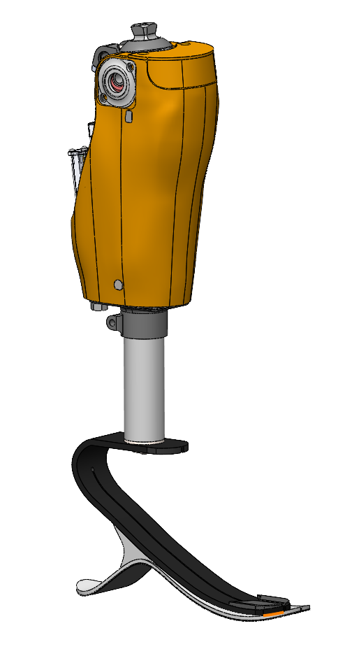

Affordable microprocessor knee (AMPK)
Problem. Microprocessor-controlled knees offer useful functions, but cost and physical fit limit who can get one.
Approach. A compact knee that keeps the essential microprocessor-controlled behavior. Design drivers: affordability, build height, and consistent behavior.
Work. Hydraulic-system design, fabrication, controller development, and benchtop validation. Human-subject evaluation is part of the development path.